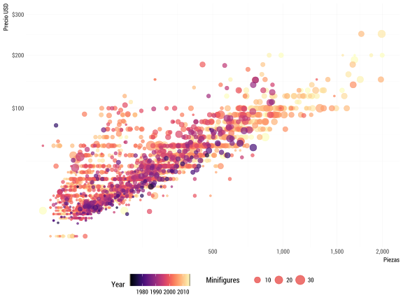
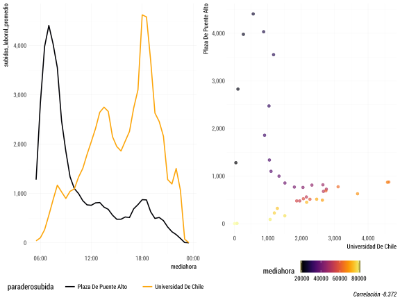
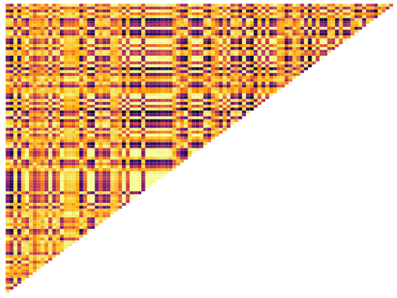
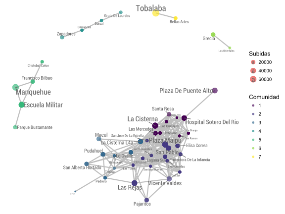
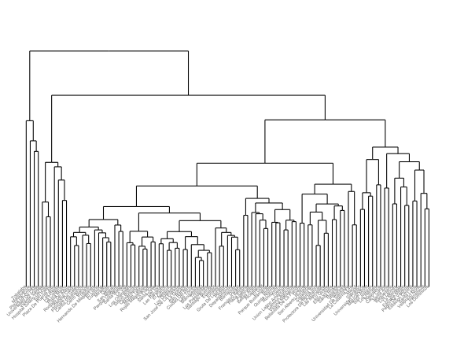
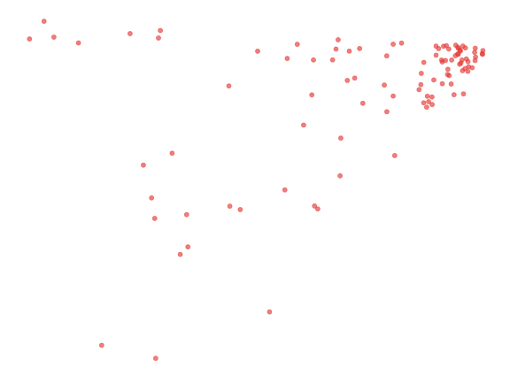
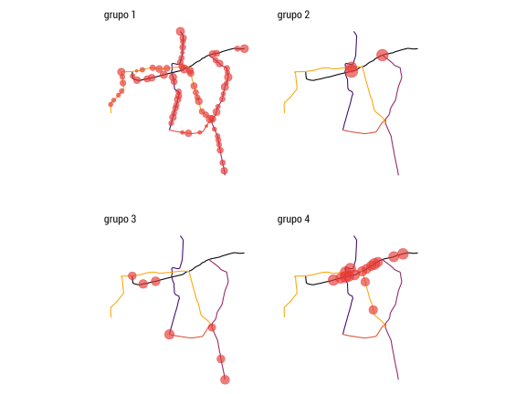

v|1i|2z|1 e|1n|2 e|2l|1 a|1n|2a|1l|2i|1s|1i|2s|1 d|1e|0 d|1a|1t|1o|3s|3
Joshua Kunst, Octubre 2017
Que haré(mos)?
- Contexto: Workflow de análisis de datos (AD)
- Visualización en el contexto del Análisis de Datos
- Viajar a través de un ejemplo guiado
Workflow en Análisis de Datos
En la mayoría de los proyectos de datos

El análisis Exploratorio de datos se puede simplificar como
- Generar preguntas acerca de los datos
- Buscar respuestas visualizando, transformando los datos
- Hacer nuevas preguntas a partir de lo aprendido
- Visualzación es no solo el producto final sino un herramienta
- Es fácil, muy fácil equivocarse. Pero más fácil es aprender de errores que de cosas que salen a la primera
- En algún momento hay que detenerse
Visualización en el Análisis de datos
Se refiere a la representación gráfica de los datos codificando la información como: posición, tamaño, formas, colores



Ayuda a resumir información. Revisemos http://tinlizzie.org/histograms/

La importancia de la Visualización: DataSaurus
La pregunta es, si tenemos promedios y desviaciones parecidas (iguales): ¿Son muy parecidos los grupos de datos?
| away_x | away_y | bullseye_x | bullseye_y | circle_x | circle_y | dino_x | dino_y | dots_x | dots_y | h_lines_x | h_lines_y | high_lines_x | high_lines_y | slant_down_x | slant_down_y | slant_up_x | slant_up_y | star_x | star_y | v_lines_x | v_lines_y | wide_lines_x | wide_lines_y | x_shape_x | x_shape_y |
|---|---|---|---|---|---|---|---|---|---|---|---|---|---|---|---|---|---|---|---|---|---|---|---|---|---|
| 32.33111 | 61.41110 | 51.20389 | 83.33978 | 55.99303 | 79.27726 | 55.3846 | 97.1795 | 51.14792 | 90.86741 | 53.36657 | 90.20803 | 57.61323 | 83.90517 | 52.87202 | 97.34322 | 47.69520 | 95.24119 | 58.21361 | 91.88189 | 50.48151 | 93.22270 | 65.81554 | 95.58837 | 38.33776 | 92.47272 |
| 53.42146 | 26.18688 | 58.97447 | 85.49982 | 50.03225 | 79.01307 | 51.5385 | 96.0256 | 50.51713 | 89.10239 | 52.80198 | 90.08806 | 51.27439 | 82.81798 | 59.01414 | 93.57487 | 44.60998 | 93.07583 | 58.19605 | 92.21499 | 50.28241 | 97.60998 | 65.67227 | 91.93340 | 35.75187 | 94.11677 |
| 63.92020 | 30.83219 | 51.87207 | 85.82974 | 51.28846 | 82.43594 | 46.1538 | 94.4872 | 50.20748 | 85.46005 | 47.05413 | 90.45894 | 50.75390 | 76.75413 | 56.37511 | 96.30515 | 43.85638 | 94.08587 | 58.71823 | 90.31053 | 50.18670 | 99.69468 | 39.00272 | 92.26184 | 32.76722 | 88.51829 |
| 70.28951 | 82.53365 | 48.17993 | 85.04512 | 51.17054 | 79.16529 | 42.8205 | 91.4103 | 50.06948 | 83.05767 | 42.44843 | 89.50770 | 37.02118 | 81.95447 | 37.83920 | 94.35944 | 41.57893 | 90.30357 | 57.27837 | 89.90761 | 50.32691 | 90.02205 | 37.79530 | 93.53246 | 33.72961 | 88.62227 |
| 34.11883 | 45.73455 | 41.68320 | 84.01794 | 44.37791 | 78.16463 | 40.7692 | 88.3333 | 50.56285 | 82.93782 | 42.70404 | 90.44263 | 42.88176 | 80.18477 | 39.88537 | 90.63466 | 49.17742 | 96.61053 | 58.08202 | 92.00814 | 50.45621 | 89.98741 | 35.51390 | 89.59919 | 37.23825 | 83.72493 |
| 67.67072 | 37.11095 | 37.89042 | 82.56749 | 45.01027 | 77.88086 | 38.7179 | 84.8718 | 50.28853 | 82.97525 | 32.37894 | 90.14414 | 37.15571 | 84.95411 | 44.07741 | 84.12585 | 42.65225 | 90.56064 | 57.48945 | 88.08529 | 30.46485 | 82.08923 | 39.21945 | 83.54348 | 36.02720 | 82.04078 |
| 53.25913 | 97.47577 | 39.54897 | 80.81260 | 48.55982 | 78.78837 | 35.6410 | 79.8718 | 25.58348 | 82.91489 | 32.53070 | 70.15740 | 38.73186 | 83.78936 | 31.49703 | 67.91256 | 30.12333 | 81.14430 | 28.08874 | 63.51079 | 30.50160 | 82.30713 | 31.58820 | 77.02805 | 39.23928 | 79.26372 |
| 63.51498 | 25.10008 | 39.64957 | 82.66453 | 42.14227 | 76.88063 | 33.0769 | 77.5641 | 25.48358 | 82.92909 | 33.36526 | 70.45934 | 31.00053 | 82.57948 | 25.95260 | 73.03318 | 31.91552 | 79.79041 | 28.08547 | 63.59020 | 30.48957 | 77.72988 | 32.65778 | 80.11386 | 39.78452 | 82.26057 |
| 67.98054 | 80.95717 | 34.75060 | 80.01109 | 41.02697 | 76.40959 | 28.9744 | 74.4872 | 25.44353 | 82.87420 | 32.65610 | 70.05107 | 25.98550 | 74.34939 | 36.43472 | 62.29405 | 27.88772 | 75.44558 | 28.08727 | 63.12328 | 30.45025 | 79.83489 | 31.64160 | 77.61083 | 35.16603 | 84.15649 |
| 67.37247 | 29.72040 | 27.56084 | 72.84783 | 34.57531 | 72.72484 | 26.1538 | 71.4103 | 25.56511 | 82.92410 | 22.95509 | 70.42690 | 23.71457 | 75.09805 | 24.99748 | 75.44156 | 27.54823 | 75.16476 | 27.57803 | 62.82104 | 30.51839 | 68.25258 | 30.98714 | 63.94403 | 40.62212 | 78.54210 |
Seleccionemos 2 grupos de datos:
| dataset | x | y |
|---|---|---|
| away | 32.33111 | 61.41110 |
| away | 53.42146 | 26.18688 |
| away | 63.92020 | 30.83219 |
Y el segundo
| dataset | x | y |
|---|---|---|
| dino | 55.3846 | 97.1795 |
| dino | 51.5385 | 96.0256 |
| dino | 46.1538 | 94.4872 |
Exploramos la primera
| x_mean | y_mean | x_sd | y_sd | xy_corr |
|---|---|---|---|---|
| 54.2661 | 47.83472 | 16.76983 | 26.93974 | -0.0641284 |
Luego la segunda
| x_mean | y_mean | x_sd | y_sd | xy_corr |
|---|---|---|---|---|
| 54.26327 | 47.83225 | 16.76514 | 26.9354 | -0.0644719 |
Resultados muy similares ¿Asumimos que los datos distribuyen igual?

Y de hecho
| dataset | x_mean | y_mean | x_sd | y_sd | xy_corr |
|---|---|---|---|---|---|
| away | 54.26610 | 47.83472 | 16.76983 | 26.93974 | -0.0641284 |
| bullseye | 54.26873 | 47.83082 | 16.76924 | 26.93573 | -0.0685864 |
| circle | 54.26732 | 47.83772 | 16.76001 | 26.93004 | -0.0683434 |
| dino | 54.26327 | 47.83225 | 16.76514 | 26.93540 | -0.0644719 |
| dots | 54.26030 | 47.83983 | 16.76774 | 26.93019 | -0.0603414 |
| h_lines | 54.26144 | 47.83025 | 16.76590 | 26.93988 | -0.0617148 |
| high_lines | 54.26881 | 47.83545 | 16.76670 | 26.94000 | -0.0685042 |
| slant_down | 54.26785 | 47.83590 | 16.76676 | 26.93610 | -0.0689797 |
| slant_up | 54.26588 | 47.83150 | 16.76885 | 26.93861 | -0.0686092 |
| star | 54.26734 | 47.83955 | 16.76896 | 26.93027 | -0.0629611 |
| v_lines | 54.26993 | 47.83699 | 16.76996 | 26.93768 | -0.0694456 |
| wide_lines | 54.26692 | 47.83160 | 16.77000 | 26.93790 | -0.0665752 |
| x_shape | 54.26015 | 47.83972 | 16.76996 | 26.93000 | -0.0655833 |

Si te dicen que en una película a la mitad se pone entretenida, existen muchas películas que que cumplen dicha característica y no necesariamente habla de la que tu conoces que a la mitad se vuelve entretenida

Subidas al Metro
¿Qué podríamos hacer?
- Explorar que estaciones se comportan de forma similar
- Probar varias visualizaciones para tener conocimiento y entrar al ciclo del Análisis Exploratorio
Datos: Ingreso promedio de personas cada media hora
| paraderosubida | mediahora | subidas_laboral_promedio |
|---|---|---|
| Alcantara | 1970-01-01 05:30:00 | 2.6 |
| Alcantara | 1970-01-01 06:00:00 | 13.2 |
| Alcantara | 1970-01-01 06:30:00 | 53.4 |
| Alcantara | 1970-01-01 07:00:00 | 184.8 |
| Alcantara | 1970-01-01 07:30:00 | 364.0 |
| Alcantara | 1970-01-01 08:00:00 | 546.2 |
| Alcantara | 1970-01-01 08:30:00 | 478.6 |
| Alcantara | 1970-01-01 09:00:00 | 359.0 |
| Alcantara | 1970-01-01 09:30:00 | 275.4 |
| Alcantara | 1970-01-01 10:00:00 | 229.6 |
Por ejemplo para Pedro De Valdivia
| paraderosubida | mediahora | subidas_laboral_promedio |
|---|---|---|
| Pedro De Valdivia | 1970-01-01 05:30:00 | 36.8 |
| Pedro De Valdivia | 1970-01-01 06:00:00 | 167.8 |
| Pedro De Valdivia | 1970-01-01 06:30:00 | 314.6 |
| Pedro De Valdivia | 1970-01-01 07:00:00 | 758.8 |
| Pedro De Valdivia | 1970-01-01 07:30:00 | 1201.2 |
| Pedro De Valdivia | 1970-01-01 08:00:00 | 1469.8 |
| Pedro De Valdivia | 1970-01-01 08:30:00 | 1363.4 |
| Pedro De Valdivia | 1970-01-01 09:00:00 | 1151.0 |
| Pedro De Valdivia | 1970-01-01 09:30:00 | 999.0 |
| Pedro De Valdivia | 1970-01-01 10:00:00 | 911.0 |
Si exploramos Plaza Maipú con Laguna Sur

Si exploramos Universidad De Chile con Plaza De Puente Alto

Entonces ¿Y si calculamos todas las correlaciones a pares?
## # A tibble: 5,050 x 3
## item1 item2 correlation
## <chr> <chr> <dbl>
## 1 Laguna Sur Las Parcelas 0.9979128
## 2 Plaza Maipu San Pablo 0.9962208
## 3 Laguna Sur Plaza Maipu 0.9960967
## 4 Del Sol Las Parcelas 0.9960689
## 5 La Granja San Ramon 0.9960405
## 6 Las Parcelas Plaza Maipu 0.9955500
## 7 Las Parcelas Protectora De La Infancia 0.9953642
## 8 Plaza Maipu Protectora De La Infancia 0.9953066
## 9 El Parron Lo Ovalle 0.9951739
## 10 Neptuno San Pablo 0.9951252
## # ... with 5,040 more rows¿Alguien dijo heatmap?

Claramente se ve…

Mmmm… Veamos solamente las asociaciones más fuertes

Yay!
Ahora sí!

Nop, no tanto
¿Qué tan cercanas son las estaciones según sus valores?

¿Y si resumimos usando un autoencoder?

Ahora agrupamos por k-medias… y?!

Mostramos grupos por separado… voilà
O podemos agrear componente geoespacial

Ahora, quizás quizás un poco mejor

Conversemos :)!
Conversemos
- http://jkunst.com
- Presentación: http://jkunst.com/r-material/201710-Visualizacion-en-el-Analisis/index.html
- & jbkunst